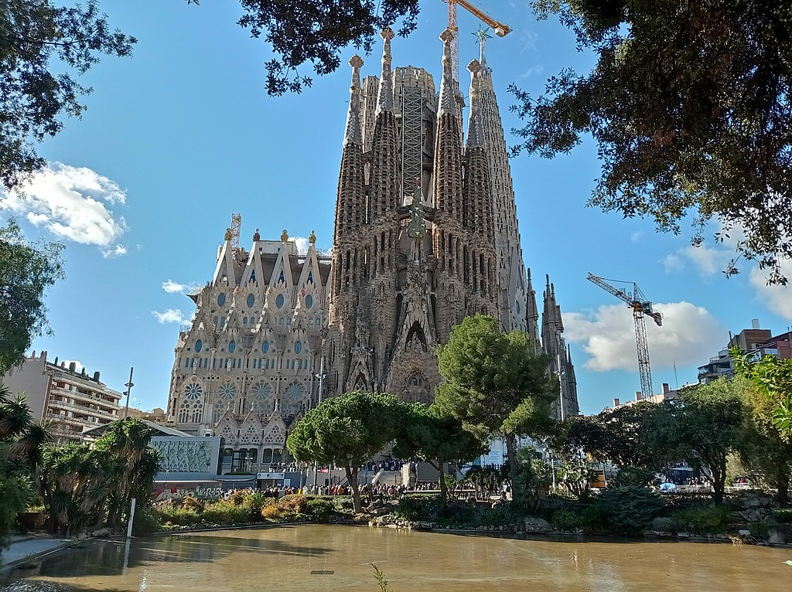

Sagrada Familia
Sagrada Família to monumentalna bazylika w Barcelonie, zaprojektowana przez katalońskiego architekta Antoniego Gaudíego. Budowa rozpoczęła się w 1882 roku i trwa do dziś. Sagrada Família jest wpisana na listę światowego dziedzictwa UNESCO i jest jednym z najważniejszych symboli Barcelony.
